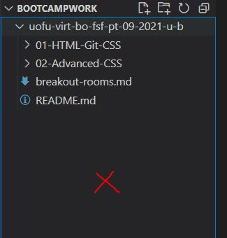

GitLab and GitHub
Let's start with some rambling:
First of all - WHAT?!? It's ok, no need to panic, we've got this!
What are these things? Short answer: GitLab and GitHub are websites for coders to store their code. WHY? Well, first of all, we never want everything to just live on our computer because if it dies we might cry that all that code is gone. Second, if we are working together on something, how am I supposed to see it if it is only on your computer? So, we store our code online in a "repository"... the literal definition is "receptacle where something is stored".
GitLab (has the orange fox logo) - this one is used for GETTING class resources. Weekly class activities, homework, resources, algorithms,etc.
GitHub (has the black cat logo) - this one is used for STORING our own personal work. Each week we make a NEW repo for our homework (always naming it something that makes sense) and this is where we save our work so we can turn it in!
Why Both??? Honestly I don't know the answer to that. Our school has been teaching this course a long time and this is the best way they have found to handle our learning so we just have to learn it!
Module practice stuff ... that does not need to be in your github, but it isn't wrong to put it there either. You will not turn in your module work (like Run-Buddy) but it is certainly nice to be able to save that code somewhere safe, see it deployed, etc.
GitLab
For GitLab you receive an invitation from the school to join the class repo. Once you get that all set, you set up your SSH keys and all that, you are ready to go for class.
First time getting the repo on your computer:
When you log in you should see the repo with the very long uofu name and a folder or two.
On the right side you see the clone drop down, click that, use SSH, and copy that code.
Now we go to VS Code. (or your terminal if you are more comfortable there) If it is not a blank page, go to File in the top, New Window. This gives a clean slate. Now, File, Open Folder. This should open your file explorer. Now, this is important here, WHERE do you want this repository folder to live? This folder is going to be updated every week, so make sure you know where to find it. I suggest making a folder for bootcamp right on your desktop. So, navigate to where you want this folder to live and "Select Folder".
Now you see that folder on the left side, and it is empty. (you can close the welcome file)
At the top, click Terminal, New Terminal.
That will show up at the bottom of the screen, make sure it is bash and not something like powershell.If you need to change it, there is a dropdown by the + that you can select which kind of terminal.

Inside the terminal we are going to type a command. We initiate all git commands by using git first, then we want to clone "make a copy" and then paste that code we got from GitLab above. So your command looks something like:
Hit enter, and it will paste a bunch of who knows what that means stuff (we will learn later). And then you will see that folder now listed on the right hand side.
Make a Copy
This is not where we stop. It is important that we do not work in this file. We will keep getting more info each week and it makes trouble if we change stuff here.
You are welcome to use the terminal commands to copy the files, but I am going to do the click method because well... I'm not good at the terminal yet.
Expand the UofU folder and right click on 01-HTML-Git-CSS. About half way down you see Copy. Do that.
Now click outside of that folder down in the blank space and you will see a blue boarder go around the entire side section.
Right click and paste. You should see that folder in the side bar now.
THIS is the folder you want to be using during class. Make changes, whatever you need to do, that is where you do it. NOT inside the UofU folder.
GREAT you got the clone, you are now in week 2 or 3 or 10... point is, you have your clone done, but you want it updated.
In your VS Code or terminal, navigate back to that UofU folder so that you are inside that file path

Now, because we have not done any changes inside this folder (because we made a copy right?) and the teacher or ta has updated gitlab with new info, we do a pull. Pull means bring down any new content. So type git pull and push enter. If there is new information, you will see all the code similar to above that says how much it received, resolved etc. IF nothing new is in the folder it will simply tell you "Already up to date."
DON'T FORGET, you just brought down new content, go back to the above section if needed to make a copy so that you don't mess up this repo folder.
GitHub
If you go to the Homework page, there are instructions on making a repo, putting it on your computer, adding your homework to the repo, etc. But here are some random things about GitHub just because.
We use GitHub for our personal work. This is going to continue long after class. Even when you get a job, you will use your own GitHub to work with others and their repos. So let's just go through a little terminology you may hear:
- clone - make a copy (download) of the repo on to your local computer
- fork - make a copy into your github (this will make a new repo inside your github of someone else's work)
- pull - request (download) an updated version of the github repo to your local machine
- push - upload the code on your computer to your github repository
- commit - creating a "bookmark" for your current progress in code. It is important to note that the version is still only local until you use the push command. You can have several commits without pushing and all will go up at the same time when you do finally push, but for me, I prefer to just always push when I create a commit.
- add - simply tells the terminal which files you want to commit. You can select folders, files, or if you type the period (.) it will add all files that have been changed.
- status - asks the terminal to display which files have been altered since your last commit
- branch - when working on large projects, you will have a branch for the particular section of code you are working on. The name of the branch generally is descriptive of your current task, and may contain other things ... maybe your initials, the date... but the commit version control keeps track of user and time so really just make sure your branch name makes sense at least. For example, if you were working on the javascript for a project you could name your branch "index-javascript"
- merge - adding your code to a repository that already contains code. When working in a group, there is an approval process to merge your files to the main code.
- merge conflict - AAAHHHH!!!! Man these things suck... but they do happen. First, what it means: your code that you are trying to add does not match the code that is already uploaded to github. The code "conflicts", maybe yours says it is a red car, and the github code says it is blue. There are tons of things that can go wrong... like TONS. And therefore how to fix a merge conflict changes based on what is happening. So... lets just list a couple options to avoid them.
- When you sit down to start coding, immediately go do a git pull to make sure you are working with the most up to date files.
- When you are ready to commit/push, only push the files that you worked on. If you were working on index.html, don't add the asset folder to your commit because there is no reason to. Adding all code when someone else may be working on it, is just a recipe for disaster.
- Communicate with your team. If you know someone else may be working in the file, double check before you just go making your own changes.
- Create a new branch for each new task you work on.
- When working in a group: